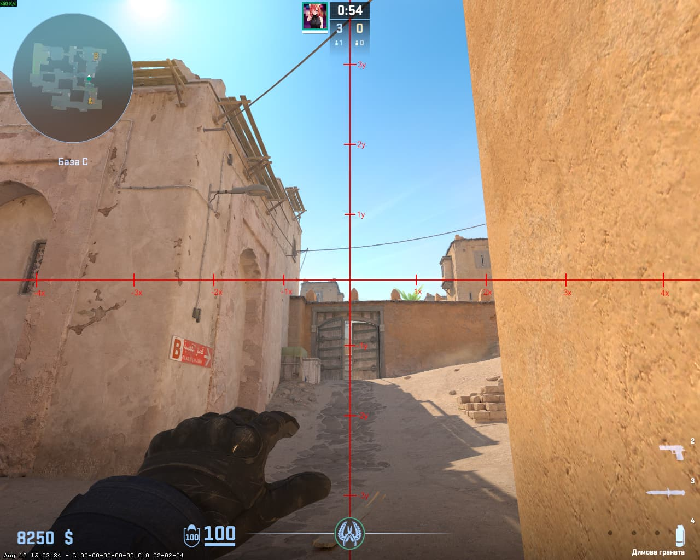
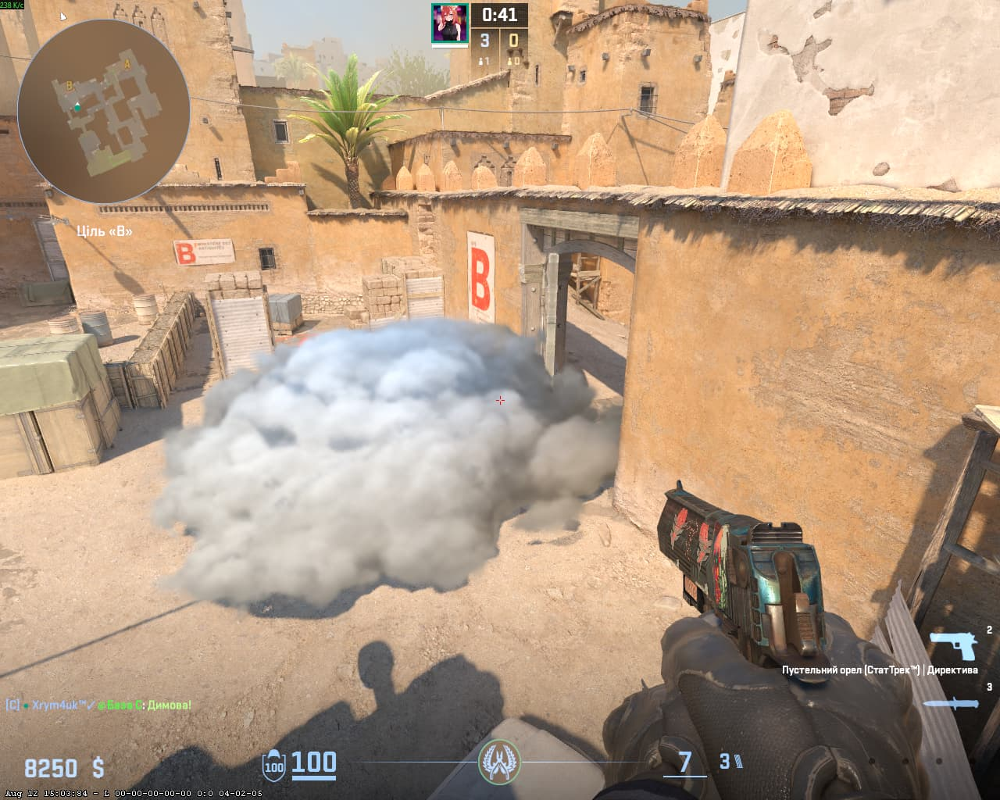
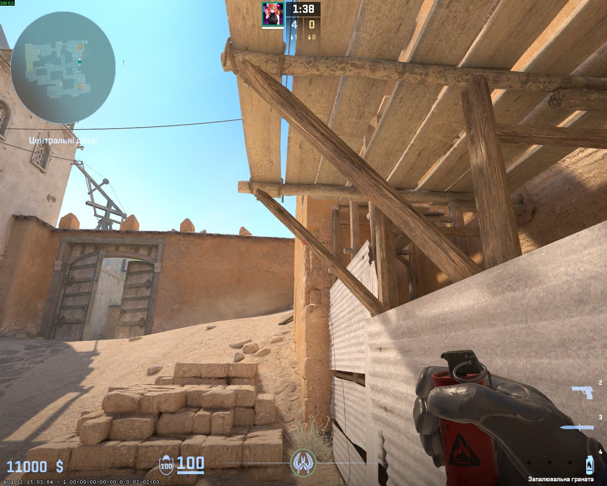
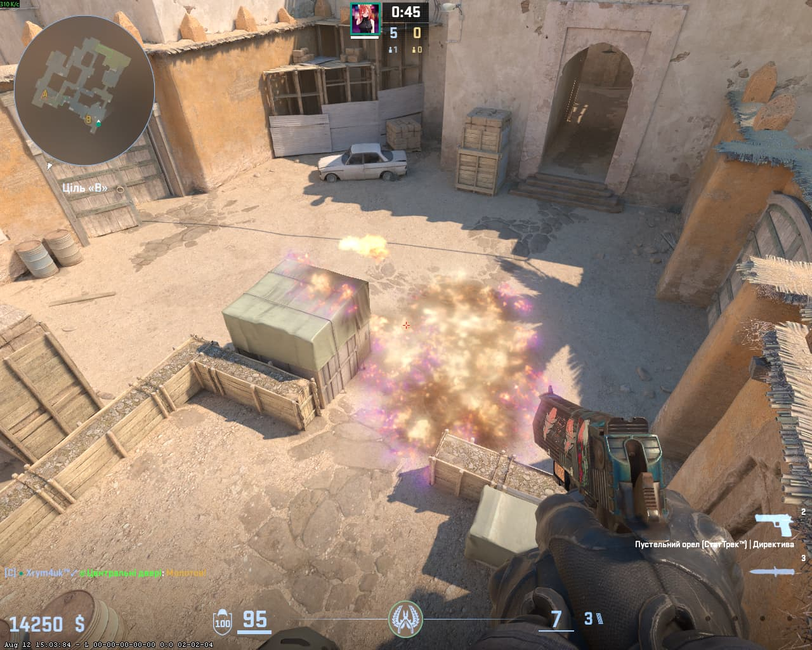
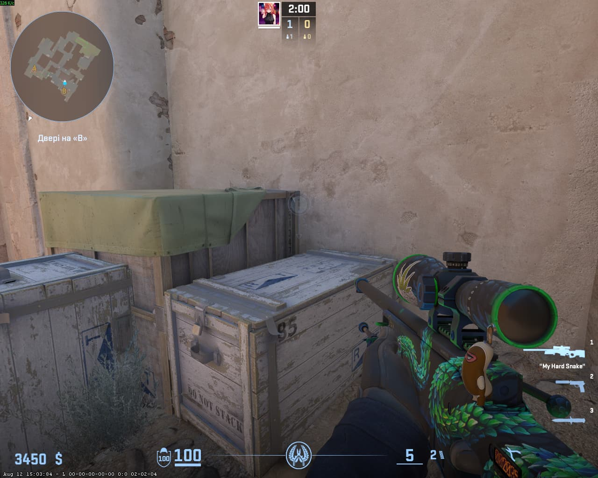

📍 Порада для телефонів: Щоб бачити сторінку точно так само, як на комп'ютері, відкрий меню браузера (3 крапки) та постав галочку «Версія для комп'ютера».
🌫️ 1. СМОК НА ВИХІД (B EXIT)
📍 ВСТАВАЙ ТУТ

🎯 ЦІЛЬСЯ ТУТ

💥 ВПАДЕ ТУТ

⚡ КИДОК: ЛКМ
🔥 2. МОЛОТОВ НА X
📍 ВСТАВАЙ ТУТ

🎯 ЦІЛЬСЯ ТУТ

💥 ВПАДЕ ТУТ

⚡ КИДОК: JUMPTHROW + ЛКМ
⚠️ Потрібно кидати в таймінг. Потренуйся!
⚡ 3. ФЛЕШ НА ВИХІД
📍 ВСТАВАЙ ТУТ

🎯 ЦІЛЬСЯ ТУТ

⚡ КИДОК: JUMPTHROW + ЛКМ + ПКМ
🔥 4. МОЛІК НА МАШИНУ (CAR)
📍 ВСТАВАЙ ТУТ

🎯 ЦІЛЬСЯ ТУТ

💥 ВПАДЕ ТУТ

⚡ КИДОК: 2 КРОКИ + JUMPTHROW + ЛКМ
⚠️ Завчасно потренуйся кидати!